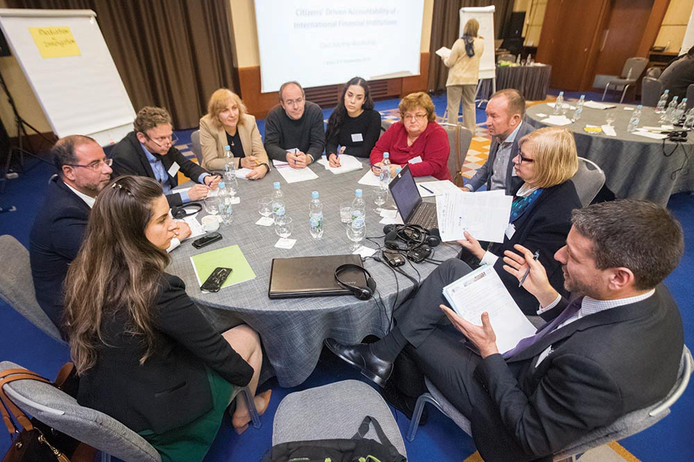
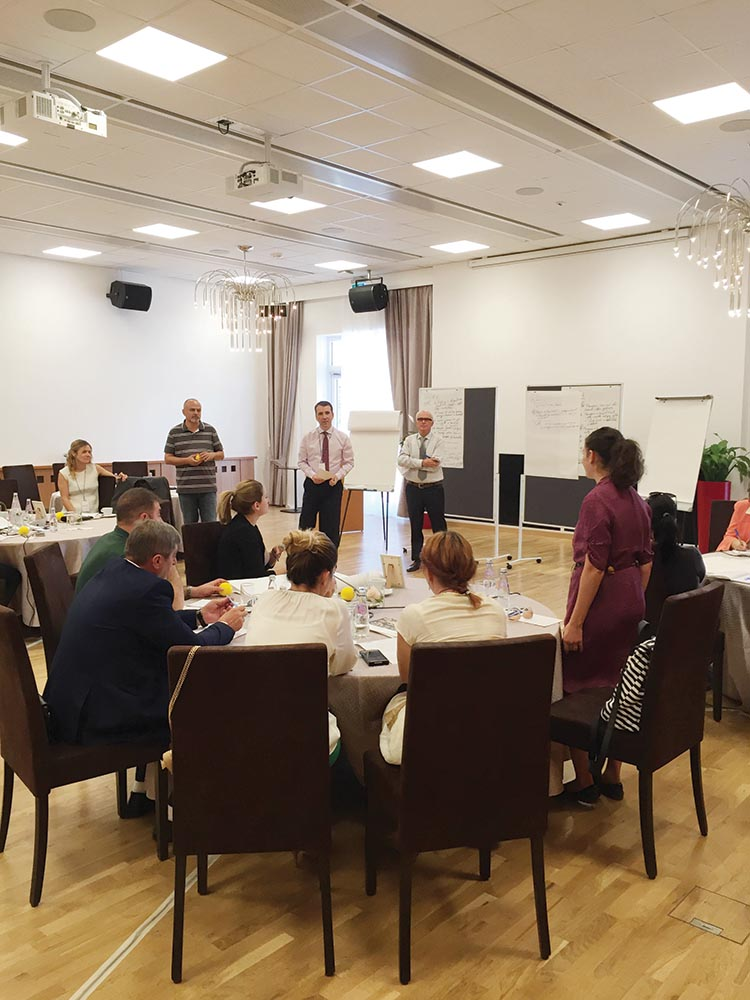
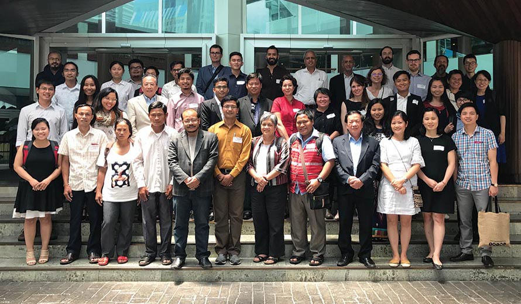

CAO met with over 200 civil society organizations from 20 countries this year through joint workshops in Eastern Europe, Asia, and Latin America.
Public awareness about the existence of grievance mechanisms at the project level, as well as independent accountability mechanisms like CAO, is critical to ensure access to recourse for communities affected by IFC and MIGA projects.
This remains a key challenge for CAO, in part due to low awareness in many countries about IFC and MIGA projects, and options for grievance redress. Outreach is therefore an important aspect of CAO’s work to raise awareness with key constituencies, particularly project-affected communities and any organizations that may support them.
Through outreach activities this year, CAO engaged civil society organizations, IFC and MIGA staff and clients, development practitioners, academia, the private sector, and other international financial institutions. In partnership with other accountability mechanisms, CAO co-organized workshops in Eastern Europe and Central Asia, East Asia, and Latin America reaching 200 civil society organizations from 20 countries to discuss ways to improve access to recourse and outcomes for local communities.
CAO also used its convening power to bring together private sector and civil society to discuss ways to improve consultation and engagement around projects. Highlights from the year are outlined below.
Outreach to Civil Society in Colombia
Fifty civil society organizations from across Colombia attended a one-day workshop in Bogota in December 2016 co-hosted by the IDB’s Independent Consultation and Investigation Mechanism, the World Bank Inspection Panel, and CAO. Participants cited challenges in accessing project information, concerns about community safety, and their experiences of engaging with the mechanisms.

Small group dialogues at a regional outreach workshop in Ukraine, November 2016.
Eastern Europe and Central Asia Outreach
CAO partnered with five other accountability mechanisms and CEE Bankwatch Network, a regional NGO, to convene a workshop in Kiev for 75 civil society organizations from Albania, Armenia, Azerbaijan, Bulgaria, Georgia, Moldova, and Ukraine. Discussions focused on improving access to recourse for communities around international development projects in Eastern Europe and Central Asia.
Small group dialogues at a regional outreach workshop in Ukraine, November 2016.
Private Sector-Civil Society Dialogue in Albania
CAO’s dispute resolution team facilitated a stakeholder dialogue in Tirana attended by national civil society, local communities, mediation professionals, and national and international companies, including IFC staff and clients. The workshop was the first of its kind organized by CAO together with IFC. Participants discussed ways to better engage communities in project consultations, the need to build transparency and trust, and opportunities for meaningful dialogue with communities about the technical aspects of projects.
A CAO-IFC community-company dialogue workshop in Tirana, Albania.
Asia Regional Outreach Workshop in Bangkok
CAO co-hosted a two-day workshop in Bangkok in June 2017 with the Inspection Panel and Asian Development Bank’s (ADB) accountability mechanism, together with International Accountability Project, Asian Indigenous Peoples Pact, the NGO Forum on ADB, International Rivers, and Center of International Environmental Law. The workshop included 40 civil society representatives from Cambodia, China, Indonesia, Laos PDR, Malaysia, Myanmar, Nepal, Thailand, and Vietnam to discuss improving access to project information and recourse for affected communities in the Asia region.
Regional civil society organizations and staff of various independent accountability mechanisms in Bangkok, June 2017.